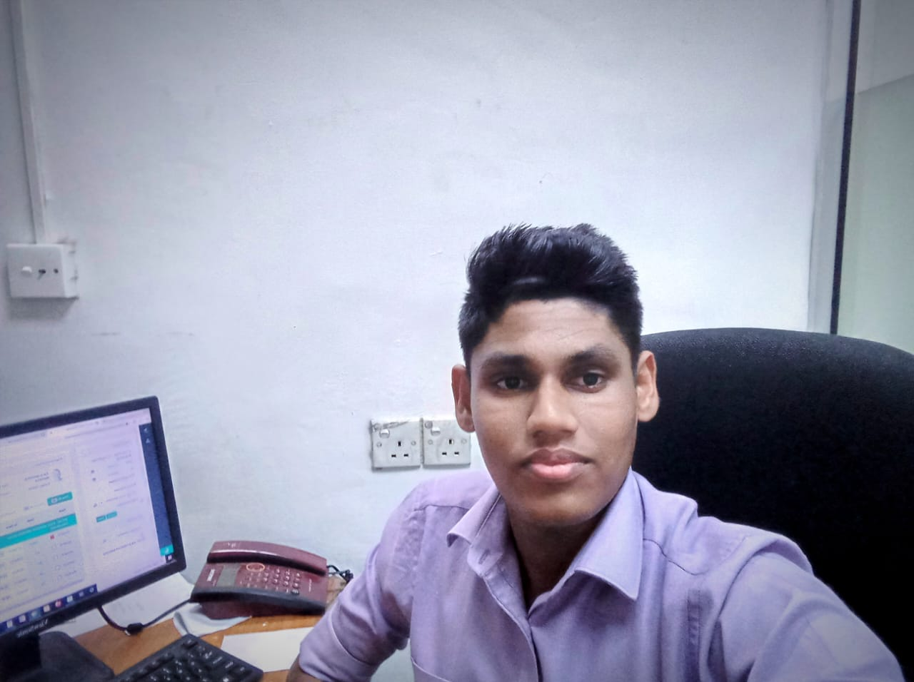

I am a highly motivated individual with a strong technical background. I possess excellent skills in infrastructure troubleshooting, problem-solving, team coordination, and time management. Driven by analytical thinking, I look forward to contributing effectively to secure and scale organizational networks.
Download Full CV
Developing core skills in networking protocols, professional ethics, security architectures, and secure system implementations.
Specializing in classic and contemporary literature, advanced communication skills, and critical professional analysis.
Comprehensive curriculum covering core recruitment operations, employee relations, and organizational psychology dynamics.
Actively managed day-to-day corporate information systems infrastructure. Developed hands-on capabilities in network administration, large-scale data analysis frameworks, and hardware/software troubleshooting protocols designed to optimize operational business uptime.
Designed and built a responsive personal portfolio using semantic HTML5 and custom CSS layouts to showcase technical qualifications and competencies.
Constructed a basic packet inspection tool framework to parse local network traffic profiles, scanning for anomalous behavior and common network exploits.
Consistently matching theoretical assignments under the CCS1310 curriculum with production infrastructure environments to optimize structural workflow security.
Email: dananjayanuwan304@gmail.com
Phone: +94 717 724 856
Address: 144/E Kandaliyaddapaluwa, Ganemulla (11020)